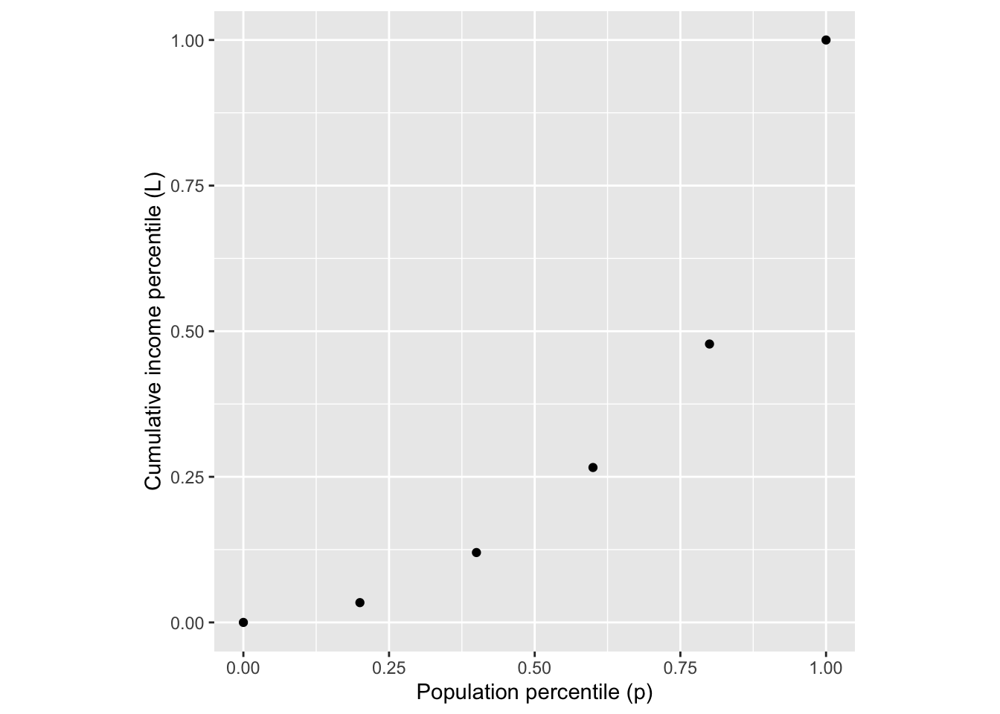
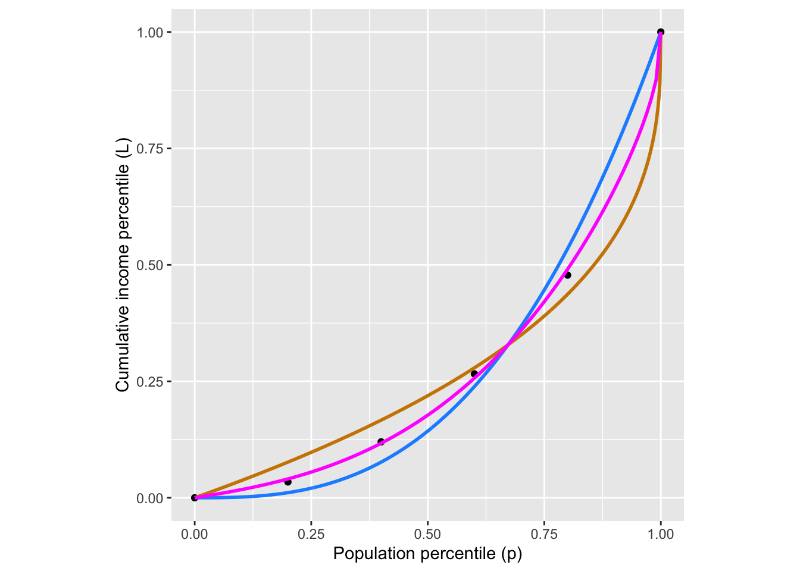

About \(\pm 1\) liter and 3 seconds.
About \(\pm 1\) liter and 5 seconds.
About \(\pm 1\) liter and 7.5 seconds.
question id: daily-digital-7-q
\[ \newcommand{\dnorm}{\text{dnorm}} \newcommand{\pnorm}{\text{pnorm}} \newcommand{\recip}{\text{recip}} \]
Exercise 1 Figure fig-spirometer shows a recording from a “spirometer,” an instrument for recording respiration. Like many old instruments, the trace from this spirometer is made by a pen at the end of a swinging arm with paper moving steadily beneath it. The arm is not exactly aligned with the horizontal axis. Nonetheless, you should be able to estimate an appropriate amplitude and period for the trace. (dm\(^3\) is cubic-decimeters: a tenth of a meter cubed. This is the same as a liter.)
What are appropriate estimates for the period and amplitude of the respiration trace?
About \(\pm 1\) liter and 3 seconds.
About \(\pm 1\) liter and 5 seconds.
About \(\pm 1\) liter and 7.5 seconds.
question id: daily-digital-7-q
Exercise 2 In this book, we are parameterizing the sinusoid using the period \(P\), the duration a cycle. In many settings, such as communications engineering and physics, it is preferable to parameterize in terms of the frequency, often written with the Greek letter \(\omega\) (“omega”).
Here’s the relationship: \[\sin\left(\frac{2\pi}{P} t\right) = \sin(2\pi \omega t)\]
question id: fpg18-1
In Exercise exr-spirometer, we looked at human breathing. The period of a breathing cycle differs from hour to hour and from person to person. (it is also somewhat, but not completely, under conscious control.) A reasonable scale for the period of normal human breathing is 3 seconds.
20 breaths/minute
3 breaths/minute
1/3 breath per minute
20 seconds per breath
question id: fgp18-2
Exercise 3 You are designing a pendulum for a planned joint NASA/ESA mission to Mars. From the orbital period and radius of Mars, its mass is known. From the mass and the observed diameter of the planet, gravitational acceleration at the surface is calculated as 3.721 m/s\(^2\). According to the textbook (sec-pendulum-dimensions), the period is \(\text{Period} = 2 \pi \sqrt{\frac{\text{Length}}{\text{Gravity}}}\).
The length of your pendulum is 3 feet.
question id: fwf8-1
question id: fwf8-2
Exercise 4 Show Newton’s Law of Cooling (temperature as input) and Hooke’s Law (which has position as an input)
Both are have a minus sign.
question id: cool-force-a
question id: cool-force-b
Comment: It’s interesting that two almost identical physics formulas give very different patterns of change over time. Calculus concepts that we get to in Block III can give excellent insight into why this is.
Exercise 5 Income inequality is a matter of perennial political debate. In the US, most people support Social Security, which is an income re-distribution programming dating back almost a century. But other re-distribution policies are controversial. Some believe they are essential to a healthy society, others that the “cure” is worse than the “disease.”
Whatever one’s views, it is helpful to have a way to quantify inequality. There are many ways that this might be done. A mathematically sophisticated one is called the Gini coefficient.
Imagine that society was divided statistically into income groups, from poorest to richest. Each of these income groups consists of a fraction of the population and has, in aggregate, a fraction of the national income. Poor people tend to be many in number but to have a very small fraction of income. Wealthy people are few in number, but have a large fraction of income. The table shows data for US households in 2009:1
| group label | population | aggregate income | cumulative income |
|---|---|---|---|
| poorest | 20% | 3.4% | 3.4% |
| low-middle | 20% | 8.6% | 12.0% |
| middle | 20% | 14.6% | 26.6% |
| high-middle | 20% | 23.2% | 47.8% |
| richest | 20% | 50.2% | 100.0% |
The cumulative income shows the fraction of income of all the people in that group or poorer. The cumulative population adds up the population fraction in that row and previous rows. So, a cumulative population of 60% means “the poorest 60% of the population” which, as the table shows, earn as a group 14.6% of the total income for the whole population.
A function that relates the cumulative population to the cumulative income is called a Lorenz function. The data are graphed in Figure fig-lorenz-data and available as the US_income data frame in the {mosaicCalc}. Later, in Figure fig-lorenz-one-fun, we will fit parameterized functions to the data.

Lorenz curves must:
Calling the income percentile \(L\) a function of the population percentile \(p\), a Lorenz function is \(L(p)\) that satisfies the requirements in the previous paragraph. Here are some functions that meet the requirements:
Notice that each of these functions has just one parameter. It seems implausible that the workings of a complex society can be summarized with just one number. We can use the curve-polishing techniques that will be introduced in XREF not implemented yet to find the “best” parameter value to match the data.
Figure fig-lorenz-one-fun compares the fitted functions to the data.

Neither form \(L_b(p)\) or \(L_q(p)\) gives a compelling description of the data. Where should we go from here?
We can provide more parameters by constructing more complicated Lorenz functions. Here are two ways to build a new Lorenz function out of an existing one:
Question: Is the composition of two Lorenz functions a Lorenz function? That is, does the composition meet the two requirements for being a Lorenz function?
To get started, figure out whether or not \(L_1(L_2(0)) = 0\) and \(L_1(L_2(1)) = 1\). If the answer is yes, then we need to find a way to compute the concavity of a Lorenz function to determine if the composition will always be concave up. We will need additional tools for this. We will introduce these in Block 2.
These data, as well as the general idea for the topic come from La Haye and Zizler (2021), “The Lorenz Curve in the Classroom”, The American Statistician, 75(2):217-225↩︎